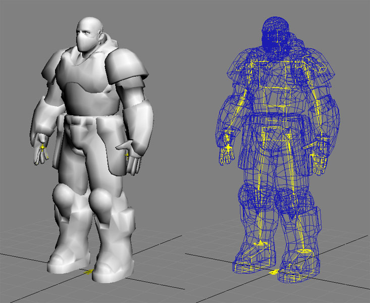
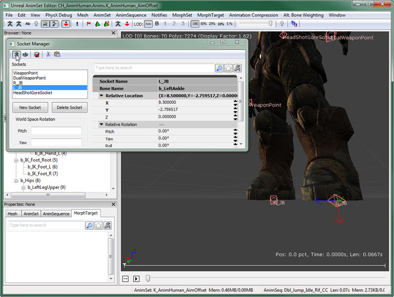
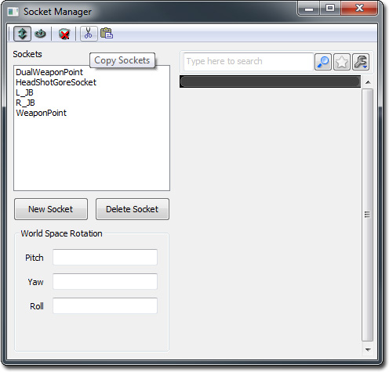
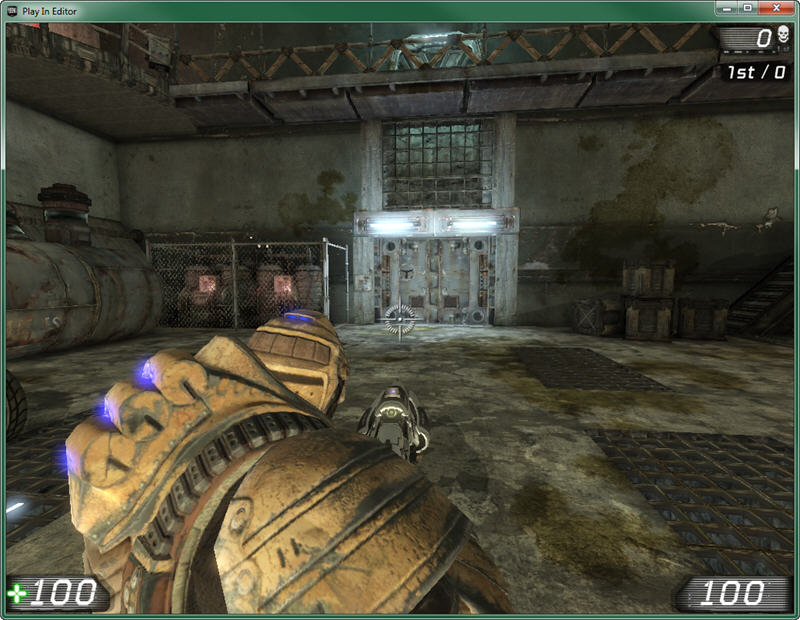

UDN
Search public documentation:
UDKCustomCharactersJP
English Translation
中国翻译
한국어
Interested in the Unreal Engine?
Visit the Unreal Technology site.
Looking for jobs and company info?
Check out the Epic games site.
Questions about support via UDN?
Contact the UDN Staff
中国翻译
한국어
Interested in the Unreal Engine?
Visit the Unreal Technology site.
Looking for jobs and company info?
Check out the Epic games site.
Questions about support via UDN?
Contact the UDN Staff
「UDK」におけるカスタムキャラクタの作成
概要
スケルトン
- UT3_Male.max (3D Studio Max 9)
- UT3_Female.max (3D Studio Max 9)
- UT3_Krall.max (3D Studio Max 9)
- UT3_Corrupt.max (3D Studio Max 2009)
スケルトンにメッシュを付加
カスタムメッシュを作成する際には、スケルトンを考慮に入れながらメッシュを作成するのが理想的です。メッシュのモデリングにおいては、すでにスケルトンによって定められた場所と関節が合うようモデリングを行います。この規則が該当しないメッシュについては、スケルトンの関節を、メッシュの関節と並ぶよう回転させます。ゲーム中のアニメーションでは、ボーンが適切な場所に戻されます。ボーンは回転が可能ですが、ジョイントがメッシュ内に入り込むような場所に移動 (平行移動を含む) することは絶対に避けてください。ボーンの平行移動先はアニメーションによって定義しているため、このような操作を行うと、メッシュが潰れたり伸びたりするなど、予期せぬ結果がゲームに現れます。たとえば、メッシュの脚をスケルトンで定義されているよりも短く設定した場合、補正のためスケルトンの脚のボーンが移動します。その結果、このキャラクタの脚は、他のキャラクタの脚の長さと合わせるため、ゲーム内では伸びているように見えます。この機能のおかげで、ゲームのキャラクタの設定時に、すべてのピースが適切に結合されていることになります。メッシュをスケルトンに適切にフィットさせるには、必要に応じて関節を回転させ、なるべくスケルトンに近づけてから、メッシュを修正してフィットさせます。プロポーションの異なるキャラクタを作成するには新しいマスタースケルトンが必要となります。さらに、プロポーションが既存のキャラクタと大きく異なる場合には、そのキャラクタ独自のアニメーションが必要となるかもしれません。これについては、本ドキュメントでは省略します。 以下のメッシュを例にとって説明します。これは、男性のスケルトンとしてモデリングされています。主要な関節と身体部位はすべてスケルトンと正確に並んでいるため、大きな調整は必要ありません。これにより、メッシュをスケルトンに付加する作業が大幅に簡素化されます。 「UT3_Male.max」ファイルのボーンを統合し、不要なボーンを削除してから、メッシュをスケルトンに付加します。この場合、メッシュには追加の部位や「たるみ」がないため、付加時には必要最低限のものだけがスケルトンに残ります (追加の部位やたるみが存在する場合には、追加のボーンが必要となります)。
エクスポート
インポート
[YourUDKInstallationDirectory]\UDKGame\Content\Characters
ソケットをメッシュに追加
 ソケットを作成するには、[New Socket] (新規ソケット)を選択し、ソケットをどのボーンに付加させるかを選択してから、このソケットに名前を付けます。
UDK に同梱の UTGame キャラクタには、カスタムキャラクタを現在のコードベースで機能させるために必要な、特定のソケットが割り当てられています。独自のキャラクタを投入して、これを追加のコードなしに適切に機能させたい場合には、少なくとも以下のソケットをメッシュに付加する必要があります。
ソケットを作成するには、[New Socket] (新規ソケット)を選択し、ソケットをどのボーンに付加させるかを選択してから、このソケットに名前を付けます。
UDK に同梱の UTGame キャラクタには、カスタムキャラクタを現在のコードベースで機能させるために必要な、特定のソケットが割り当てられています。独自のキャラクタを投入して、これを追加のコードなしに適切に機能させたい場合には、少なくとも以下のソケットをメッシュに付加する必要があります。
| Socket Name | Bone Name |
| WeaponPoint | b_RightWeapon |
| DualWeaponPoint | b_LeftWeapon |
| L_JB | b_LeftAnkle |
| R_JB | b_RightAnkle |
| HeadShotGoreSocket | b_Neck |

ソケットに関する詳細については、 このページ を参照してください。既存の UDK キャラクターからソケットを素早くコピーする
パッケージに保存されている既存の他骨格メッシュと同じ骨格リグを自身の骨格メッシュの中で使用している場合は、ソケットをわざわざ新たに作成しなくても素早くコピーすることができます。たとえば、CH_LIAM_Cathode.Mesh.SK_CH_LIAM_Cathode として保存されている骨格メッシュを開きます。[Socket Manager] (ソケットマネージャー) を開き、[Copy Sockets] (ソケットをコピーする) ボタンをクリックします。
次に、自身の骨格メッシュを開きます。[Socket Manager] (ソケットマネージャー) を開き、[Paste Sockets] (ソケットをペーストする) ボタンをクリックします。
ゲームで使用できるようキャラクタを設定
UTFamilyInfo サブクラス
基本的に、UTFamilyInfo クラスは、パーティクルキャラクタやキャラクタのグループに対して、どのメッシュ、物理アセット、アニメーションセット、マテリアル、ジブなどを使用するかを定めた、プロパティのコンテナとして機能します。このクラスには他の機能もいくつか含まれていますが、本ドキュメントでは、キャラクタを UDK に投入するために必要なプロパティを設定する場所と理解してください。
ここでは、サブクラスを 1 つ作成して、これを 1 体のキャラクタに対してのみ使用します。理論的には、クラスが UTFamilyInfo からサブクラスへと分岐するようなクラス階層を作成することで、何らかの共通点のあるキャラクタのグループに対して汎用プロパティを定義することも可能です。例えば、外見に関して共通のテーマが適用されているキャラクタのグループがあるとします。これらのキャラクタは、同じファクションに属していると見なされます。次に、この新しいクラスに対して複数のサブクラスを作成します。個々のサブクラスを上記ファクションに属する特定のキャラクタに割り当てることで、このキャラクタがファクション内でどのファミリに属しているか設定するなど、さらなる分類が可能です。
続行するには、キャラクタに割り当てられたクラスに対して、新しいサブクラスを作成する必要があります。
Class UTFamilyInfo_SpaceMarine extends UTFamilyInfo
abstract;
defaultproperties
{
}
CharacterMesh=SkeletalMesh'UDNCharacters.SpaceMarine'
- Faction - このキャラクタまたはキャラクタのグループが属している、グループ全体の名前です。
- FamilyID - このキャラクタが属しているファミリの名前です。
- CharacterTeamBodyMaterials - これは、チームゲームにおいて、キャラクタの身体マテリアルとして使用するマテリアルのアレイです。0 インデックスは赤、1 インデックスは青です。
- CharacterTeamHeadMaterials - これは、チームゲームにおいて、キャラクタの頭部マテリアルとして使用するマテリアルのアレイです。0 インデックスは赤、1 インデックスは青です。
- PhysicsAsset - これは、キャラクタのスケルタルメッシュ用に作成された物理アセットを参照します。
- AnimSets - これは、キャラクタに使用するアニメーションセット (AnimSets) のアレイです。
- ArmMeshPackageName - このキャラクタのファーストパーソン腕メッシュが含まれる、パッケージの名前です。
- ArmMesh - これは、このキャラクタのファーストパーソン腕メッシュを参照します。
- ArmSkinPackageName - ファーストパーソン腕メッシュのマテリアルが含まれる、パッケージの名前です。
- RedArmMaterial - これは、ファーストパーソン腕メッシュの赤いチームマテリアルを参照します。
- BlueArmMaterial - これは、ファーストパーソン腕メッシュの青いチームマテリアルを参照します。
[YourUDKInstallationDirectory]/Development/Src/UTGame
UTPlayerReplicationInfo クラス
次に、UDK に対して、現在デフォルトとなっているクラスではなく、新しいクラスを使用するよう命令します。これは、デフォルトのプロパティブロックにある「 UTPlayerReplicationInfo.uc 」ファイルで実行できます。最後のラインは以下のようになっているはずです。CharClassInfo=class'UTGame.UTFamilyInfo_Liandri_Male'
CharClassInfo=class'UTGame.UTFamilyInfo_SpaceMarine'
